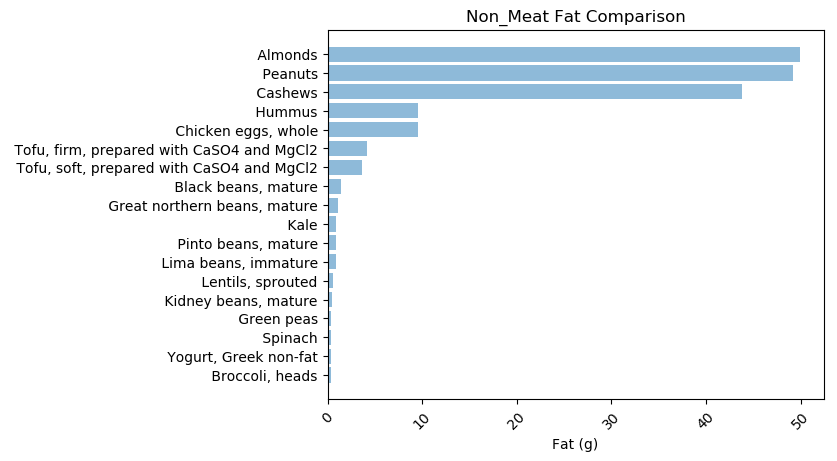
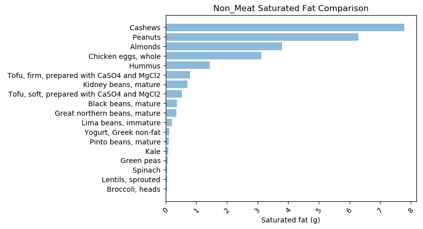
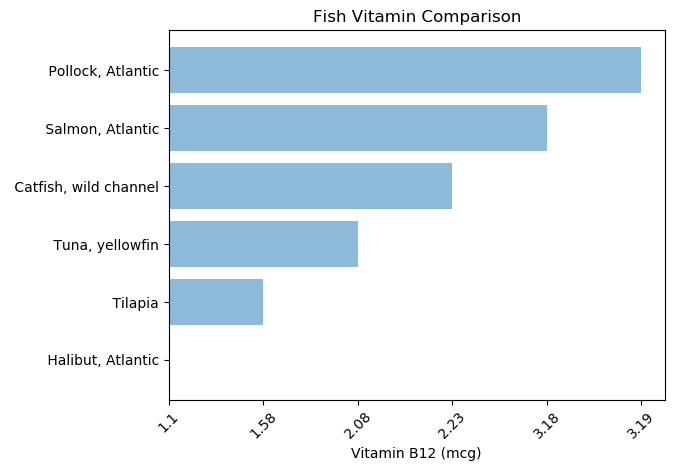
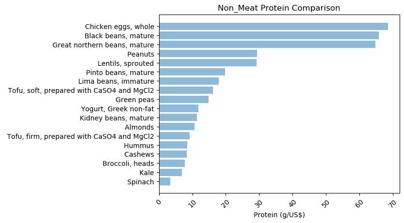

import pandas as pd
import matplotlib as plt
import matplotlib.pyplot as plt; plt.rcdefaults()
import matplotlib.pyplot as plt
import numpy as np
df1 = pd.read_csv("Nutrition.csv", encoding= 'unicode_escape')
df2 = pd.read_csv("nutrition-cost.csv", encoding= 'unicode_escape')
# categories
meat = "Meat, raw/unprepared unless noted otherwise"
fish = "Fish, raw/unprepared"
non_meat = "Non-meat, raw/unprepared"
from IPython.core.display import display, HTML
display(HTML("<style>.container { width:100% !important; }</style>"))Table of Contents
- 1 Nutrient Density and Value Data Visualization
- 2 About
- 3 Importing libraries
- 4 Raw Data
- 5 Largest values
- 6 Plotting Function
-
7 Charts
- 7.1 All Energy Values Comparison
- 7.2 All Protein Values Comparison
- 7.3 All Fat Values Comparison
- 7.4 All Saturated Fat Values Comparison
- 7.5 All Cholesterol Values Comparison
- 7.6 All Vitamn Values Comparison
- 7.7 All Sodium Values Comparison
- 7.8 All Phosphorus Values Comparison
- 7.9 All Iron Values Comparison
- 7.10 All Zinc Values Comparison
- 7.11 All Retail Cost Comparison
- 8 Testing
- 9 Previous versions of functions
About
This is a project I made to analyze the amount of protein the various animal and vegetable products people can consume.
In this post, I learned the basics of using matplotlib. A future post might be refining this post
The data was imported from
Bohrer, B. M. (2017). Review: Nutrient density and nutritional value of meat products and non-meat foods high in protein. Trends in Food Science & Technology, 65, 103-112. doi:10.1016/j.tifs.2017.04.016 .
Importing libraries
The categories variables map to the text from the table. I made these variables to test the function
Raw Data
Once we have loaded the csv files, I will take a look to see that the values are correct and check if there are any noticeable trends
df1| Category | Product | Energy value (kcal) | Protein (g) | Fat (g) | Saturated fat (g) | Cholesterol (mg) | Vitamin B12 (mcg) | Na (mg) | P (mg) | Fe (mg) | Zn (mg) | |
|---|---|---|---|---|---|---|---|---|---|---|---|---|
| 0 | Meat, raw/unprepared unless noted otherwise | Beef ribeye (longissimus thoracis) | 166 | 17.51 | 22.07 | 9.000 | 68 | 3.11 | 56.00 | 168 | 1.87 | 3.85 |
| 1 | Meat, raw/unprepared unless noted otherwise | Beef strip loin (longissimus lumborum) | 228 | 20.61 | 15.49 | 6.251 | 81 | 1.06 | 52.00 | 186 | 1.47 | 3.53 |
| 2 | Meat, raw/unprepared unless noted otherwise | Beef tenderloin (psoas major) | 247 | 19.61 | 18.16 | 8.410 | 85 | 1.01 | 50.00 | 180 | 1.42 | 2.9 |
| 3 | Meat, raw/unprepared unless noted otherwise | Beef top sirloin (gluteus mediuset al.) | 201 | 20.30 | 12.71 | 5.127 | 75 | 1.05 | 52.00 | 187 | 1.48 | 3.55 |
| 4 | Meat, raw/unprepared unless noted otherwise | Beef tri-tip (m. tensor fasciae latae) | 142 | 21.26 | 5.63 | 1.729 | 61 | 1.04 | 54.00 | 198 | 1.54 | 3.85 |
| 5 | Meat, raw/unprepared unless noted otherwise | Beef eye of round (semitendinosus) | 124 | 23.27 | 3.44 | 1.276 | 60 | 1.83 | 53.00 | 221 | 1.45 | 3.4 |
| 6 | Meat, raw/unprepared unless noted otherwise | Beef brisket (deep pectoral et al.) | 132 | 21.47 | 5.11 | 1.844 | 67 | 1.81 | 83.00 | 222 | 2.06 | 5.21 |
| 7 | Meat, raw/unprepared unless noted otherwise | Beef flank (rectus abdominis) | 155 | 21.22 | 7.17 | 2.978 | 65 | 1.09 | 54.00 | 195 | 1.55 | 3.7 |
| 8 | Meat, raw/unprepared unless noted otherwise | Beef, ground 80% lean, 20% fat | 254 | 17.17 | 20.00 | 7.581 | 71 | 2.14 | 66.00 | 158 | 1.94 | 4.18 |
| 9 | Meat, raw/unprepared unless noted otherwise | Beef, ground 90% lean, 10% fat | 176 | 20.00 | 10.00 | 3.927 | 65 | 2.21 | 66.00 | 184 | 2.24 | 4.79 |
| 10 | Meat, raw/unprepared unless noted otherwise | Beef, ground 93% lean, 7% fat | 152 | 20.85 | 7.00 | 2.878 | 63 | 2.23 | 66.00 | 192 | 2.33 | 4.97 |
| 11 | Meat, raw/unprepared unless noted otherwise | Beef, ground 97% lean, 3% fat | 121 | 21.98 | 3.00 | 1.480 | 60 | 2.26 | 66.00 | 203 | 2.44 | 5.21 |
| 12 | Meat, raw/unprepared unless noted otherwise | Pork loin (longissimus lumborum) | 198 | 19.74 | 12.58 | 4.360 | 63 | 0.53 | 50.00 | 197 | 0.79 | 1.74 |
| 13 | Meat, raw/unprepared unless noted otherwise | Pork ham (biceps femoris et al.) | 245 | 17.43 | 18.87 | 6.540 | 73 | 0.63 | 47.00 | 199 | 0.85 | 1.93 |
| 14 | Meat, raw/unprepared unless noted otherwise | Pork, ground 84% lean, 16% fat | 218 | 17.99 | 16.00 | 4.930 | 68 | 0.73 | 68.00 | 161 | 0.88 | 1.91 |
| 15 | Meat, raw/unprepared unless noted otherwise | Pork, ground 96% lean, 4% fat | 121 | 21.10 | 4.00 | 1.420 | 59 | 0.64 | 67.00 | 190 | 0.86 | 1.93 |
| 16 | Meat, raw/unprepared unless noted otherwise | Lamb loin (longissimus lumborum) | 310 | 16.32 | 26.63 | 11.760 | 74 | 2.04 | 56.00 | 152 | 1.61 | 2.53 |
| 17 | Meat, raw/unprepared unless noted otherwise | Lamb leg (biceps femoris et al) | 230 | 17.91 | 17.07 | 7.430 | 69 | 2.5 | 56.00 | 170 | 1.66 | 3.32 |
| 18 | Meat, raw/unprepared unless noted otherwise | Lamb, ground 85% lean, 15% fat | 255 | 17.14 | 20.71 | 9.926 | 73 | – | 77.00 | – | 1.41 | – |
| 19 | Meat, raw/unprepared unless noted otherwise | Chicken breast (pectoralis major) | 120 | 22.50 | 2.62 | 0.563 | 73 | 0.21 | 45.00 | 213 | 0.37 | 0.68 |
| 20 | Meat, raw/unprepared unless noted otherwise | Chicken thigh (iliotibialis et al.) | 221 | 16.52 | 16.61 | 4.524 | 98 | 0.62 | 81.00 | 157 | 0.68 | 1.29 |
| 21 | Meat, raw/unprepared unless noted otherwise | Turkey breast (pectoralis major) | 157 | 21.89 | 7.02 | 1.910 | 65 | 0.42 | 59.00 | 186 | 1.20 | 1.57 |
| 22 | Meat, raw/unprepared unless noted otherwise | Turkey thigh (iliotibialis et al.) | 116 | 20.60 | 3.69 | 0.782 | 78 | 2.17 | 75.00 | 177 | 1.42 | 2.95 |
| 23 | Meat, raw/unprepared unless noted otherwise | Turkey, ground, 93% lean, 15% fat | 150 | 18.73 | 8.34 | 2.170 | 74 | 1.2 | 69.00 | 193 | 1.17 | 2.53 |
| 24 | Meat, raw/unprepared unless noted otherwise | Pork bacon, cured, unprepared | 417 | 12.62 | 39.69 | 13.296 | 66 | 0.5 | 662.00 | 144 | 0.41 | 1.18 |
| 25 | Fish, raw/unprepared | Tuna, yellowfin | 109 | 24.40 | 0.49 | 0.172 | 39 | 2.08 | 45.00 | 278 | 0.77 | 0.37 |
| 26 | Fish, raw/unprepared | Salmon, Atlantic | 142 | 19.84 | 6.34 | 0.981 | 55 | 3.18 | 44.00 | 200 | 0.80 | 0.64 |
| 27 | Fish, raw/unprepared | Pollock, Atlantic | 92 | 19.44 | 0.98 | 0.135 | 71 | 3.19 | 86.00 | 221 | 0.46 | 0.47 |
| 28 | Fish, raw/unprepared | Halibut, Atlantic | 91 | 18.56 | 1.33 | 0.292 | 49 | 1.1 | 68.00 | 236 | 0.16 | 0.36 |
| 29 | Fish, raw/unprepared | Tilapia | 96 | 20.08 | 1.70 | 0.585 | 50 | 1.58 | 52.00 | 170 | 0.56 | 0.33 |
| 30 | Fish, raw/unprepared | Catfish, wild channel | 95 | 16.38 | 2.82 | 0.722 | 58 | 2.23 | 43.00 | 209 | 0.30 | 0.51 |
| 31 | Non-meat, raw/unprepared | Chicken eggs, whole | 143 | 12.56 | 9.51 | 3.126 | 372 | 0.89 | 142.00 | 198 | 1.75 | 1.29 |
| 32 | Non-meat, raw/unprepared | Yogurt, Greek non-fat | 59 | 10.19 | 0.39 | 0.117 | 5 | 0.75 | 36.00 | 135 | 0.07 | 0.52 |
| 33 | Non-meat, raw/unprepared | Kale | 49 | 4.28 | 0.93 | 0.091 | 0 | 0 | 38.00 | 92 | 1.47 | 0.56 |
| 34 | Non-meat, raw/unprepared | Lentils, sprouted | 106 | 8.96 | 0.55 | 0.057 | 0 | 0 | 11.00 | 173 | 3.21 | 1.51 |
| 35 | Non-meat, raw/unprepared | Broccoli, heads | 34 | 2.82 | 0.37 | 0.039 | 0 | 0 | 33.00 | 66 | 0.73 | 0.41 |
| 36 | Non-meat, raw/unprepared | Green peas | 81 | 5.42 | 0.40 | 0.071 | 0 | 0 | 5.00 | 108 | 1.47 | 1.24 |
| 37 | Non-meat, raw/unprepared | Spinach | 23 | 2.86 | 0.39 | 0.063 | 0 | 0 | 79.00 | 49 | 2.71 | 0.53 |
| 38 | Non-meat, raw/unprepared | Black beans, mature | 341 | 21.60 | 1.42 | 0.366 | 0 | 0 | 5.00 | 352 | 5.02 | 3.65 |
| 39 | Non-meat, raw/unprepared | Pinto beans, mature | 62 | 5.25 | 0.90 | 0.109 | 0 | 0 | 153.00 | 94 | 1.97 | 0.5 |
| 40 | Non-meat, raw/unprepared | Lima beans, immature | 113 | 6.84 | 0.86 | 0.198 | 0 | 0 | 0.78 | 136 | 3.14 | 0.78 |
| 41 | Non-meat, raw/unprepared | Kidney beans, mature | 29 | 4.20 | 0.50 | 0.720 | 0 | 0 | 6.00 | 37 | 0.81 | 0.4 |
| 42 | Non-meat, raw/unprepared | Great northern beans, mature | 339 | 21.86 | 1.14 | 0.356 | 0 | 0 | 14.00 | 447 | 5.47 | 2.31 |
| 43 | Non-meat, raw/unprepared | Tofu, firm, prepared with CaSO4 and MgCl2 | 78 | 9.04 | 4.17 | 0.793 | 0 | 0 | 12.00 | 121 | 1.61 | 0.83 |
| 44 | Non-meat, raw/unprepared | Tofu, soft, prepared with CaSO4 and MgCl2 | 61 | 7.17 | 3.69 | 0.533 | 0 | 0 | 8.00 | 92 | 1.11 | 0.64 |
| 45 | Non-meat, raw/unprepared | Hummus | 166 | 7.90 | 9.60 | 1.437 | 0 | 0 | 379.00 | 176 | 2.44 | 1.83 |
| 46 | Non-meat, raw/unprepared | Peanuts | 567 | 25.80 | 49.24 | 6.279 | 0 | 0 | 18.00 | 376 | 4.58 | 3.27 |
| 47 | Non-meat, raw/unprepared | Almonds | 579 | 21.15 | 49.93 | 3.802 | 0 | 0 | 1.00 | 481 | 3.71 | 3.12 |
| 48 | Non-meat, raw/unprepared | Cashews | 553 | 18.22 | 43.85 | 7.783 | 0 | 0 | 12.00 | 593 | 6.68 | 5.78 |
df2| Category | Product | Retail Cost/100 g (US$) | Source of estimationb | Energy value (kcal/US$) | Protein (g/US$) | Vitamin B12 (mcg/US$) | P (mg/US$) | Fe (mg/US$) | Zn (mg/US$) | |
|---|---|---|---|---|---|---|---|---|---|---|
| 0 | Meat, raw/unprepared unless noted otherwise | Beef ribeye (longissimus thoracis) | 1.81000 | USDA, AMS, 2016 | 91.71 | 9.67 | 1.72 | 92.82 | 1.03 | 2.13 |
| 1 | Meat, raw/unprepared unless noted otherwise | Beef strip loin (longissimus lumborum) | 1.72620 | USDA, AMS, 2016 | 132.08 | 11.94 | 0.61 | 107.75 | 0.85 | 2.04 |
| 2 | Meat, raw/unprepared unless noted otherwise | Beef tenderloin (psoas major) | 2.44490 | USDA, AMS, 2016 | 101.03 | 8.02 | 0.41 | 73.62 | 0.58 | 1.19 |
| 3 | Meat, raw/unprepared unless noted otherwise | Beef top sirloin (gluteus medius et al.) | 1.12440 | USDA, AMS, 2016 | 178.77 | 18.05 | 0.93 | 166.32 | 1.32 | 3.16 |
| 4 | Meat, raw/unprepared unless noted otherwise | Beef tri-tip (m. tensor fasciae latae) | 1.18610 | USDA, AMS, 2016 | 119.72 | 17.92 | 0.88 | 166.94 | 1.30 | 3.25 |
| 5 | Meat, raw/unprepared unless noted otherwise | Beef eye of round (semitendinosus) | 1.01410 | USDA, AMS, 2016 | 122.27 | 22.95 | 1.8 | 217.92 | 1.43 | 3.35 |
| 6 | Meat, raw/unprepared unless noted otherwise | Beef brisket (deep pectoralet al.) | 0.89950 | USDA, AMS, 2016 | 146.75 | 23.87 | 2.01 | 246.81 | 2.29 | 5.79 |
| 7 | Meat, raw/unprepared unless noted otherwise | Beef flank (rectus abdominis) | 1.69980 | USDA, AMS, 2016 | 91.19 | 12.48 | 0.64 | 114.72 | 0.91 | 2.18 |
| 8 | Meat, raw/unprepared unless noted otherwise | Beef, ground 80% lean, 20% fat | 0.73190 | USDA, AMS, 2016 | 347.03 | 23.46 | 2.92 | 215.87 | 2.65 | 5.71 |
| 9 | Meat, raw/unprepared unless noted otherwise | Beef, ground 90% lean, 10% fat | 1.03620 | USDA, AMS, 2016 | 169.86 | 19.30 | 2.13 | 177.58 | 2.16 | 4.62 |
| 10 | Meat, raw/unprepared unless noted otherwise | Beef, ground 93% lean, 7% fat | 1.03620 | USDA, AMS, 2016 | 146.69 | 20.12 | 2.15 | 185.3 | 2.25 | 4.8 |
| 11 | Meat, raw/unprepared unless noted otherwise | Beef, ground 97% lean, 3% fat | 1.03620 | USDA, AMS, 2016 | 116.78 | 21.21 | 2.18 | 195.91 | 2.35 | 5.03 |
| 12 | Meat, raw/unprepared unless noted otherwise | Pork loin (longissimus lumborum) | 0.41230 | USDA, AMS, 2016 | 480.27 | 47.88 | 1.29 | 477.85 | 1.92 | 4.22 |
| 13 | Meat, raw/unprepared unless noted otherwise | Pork ham (biceps femoriset al.) | 0.70550 | USDA, AMS, 2016 | 347.28 | 24.71 | 0.89 | 282.08 | 1.20 | 2.74 |
| 14 | Meat, raw/unprepared unless noted otherwise | Pork bacon, cured, unprepared | 4.72890 | USDA, AMS, 2016 | 88.18 | 2.67 | 0.11 | 30.45 | 0.09 | 0.25 |
| 15 | Meat, raw/unprepared unless noted otherwise | Pork, ground 84% lean, 16% fat | 0.59300 | USDA, AMS, 2016 | 367.60 | 30.34 | 1.23 | 271.48 | 1.48 | 3.22 |
| 16 | Meat, raw/unprepared unless noted otherwise | Pork, ground 96% lean, 4% fat | 0.59300 | USDA, AMS, 2016 | 204.03 | 35.58 | 1.08 | 320.38 | 1.45 | 3.25 |
| 17 | Meat, raw/unprepared unless noted otherwise | Lamb loin (longissimus lumborum) | 1.78570 | USDA, AMS, 2016 | 173.60 | 9.14 | 1.14 | 85.12 | 0.90 | 1.42 |
| 18 | Meat, raw/unprepared unless noted otherwise | Lamb leg (biceps femoris et al) | 1.76150 | USDA, AMS, 2016 | 130.57 | 10.17 | 1.42 | 96.51 | 0.94 | 1.88 |
| 19 | Meat, raw/unprepared unless noted otherwise | Lamb, ground 85% lean, 15% fat | 1.24120 | USDA, AMS, 2016 | 205.45 | 13.81 | – | – | 1.14 | – |
| 20 | Meat, raw/unprepared unless noted otherwise | Chicken breast (pectoralis major) | 0.70110 | USDA, AMS, 2016 | 171.17 | 32.09 | 0.3 | 303.82 | 0.53 | 0.97 |
| 21 | Meat, raw/unprepared unless noted otherwise | Chicken thigh (iliotibialiset al.) | 0.28440 | USDA, AMS, 2016 | 777.09 | 58.09 | 2.18 | 552.05 | 2.39 | 4.54 |
| 22 | Meat, raw/unprepared unless noted otherwise | Turkey breast (pectoralis major) | 0.59300 | USDA, AMS, 2016 | 264.74 | 36.91 | 0.71 | 313.64 | 2.02 | 2.65 |
| 23 | Meat, raw/unprepared unless noted otherwise | Turkey thigh (iliotibialiset al.) | 0.66140 | USDA, AMS, 2016 | 175.39 | 31.15 | 3.28 | 267.62 | 2.15 | 4.46 |
| 24 | Meat, raw/unprepared unless noted otherwise | Turkey, ground, 93% lean, 15% fat | 0.78480 | USDA, AMS, 2016 | 191.12 | 23.86 | 1.53 | 245.91 | 1.49 | 3.22 |
| 25 | Fish, raw/unprepared | Tuna, yellowfin | 5.01820 | Marketplace assessment | 21.72 | 4.86 | 0.41 | 55.4 | 0.15 | 0.07 |
| 26 | Fish, raw/unprepared | Salmon, Atlantic | 4.54060 | Marketplace assessment | 31.27 | 4.37 | 0.7 | 44.05 | 0.18 | 0.14 |
| 27 | Fish, raw/unprepared | Pollock, Atlantic | 0.81430 | Marketplace assessment | 112.98 | 23.87 | 3.92 | 271.4 | 0.56 | 0.58 |
| 28 | Fish, raw/unprepared | Halibut, Atlantic | 7.30520 | Marketplace assessment | 12.46 | 2.54 | 0.15 | 32.31 | 0.02 | 0.05 |
| 29 | Fish, raw/unprepared | Tilapia | 2.00220 | Marketplace assessment | 47.95 | 10.03 | 0.79 | 84.91 | 0.28 | 0.16 |
| 30 | Fish, raw/unprepared | Catfish, wild channel | 2.36250 | Marketplace assessment | 40.21 | 6.93 | 0.94 | 88.47 | 0.13 | 0.22 |
| 31 | Non-meat, raw/unprepared | Chicken eggs, whole | 0.18330 | USDA, AMS, 2016 | 780.00 | 68.51 | 4.85 | 1080 | 9.55 | 7.04 |
| 32 | Non-meat, raw/unprepared | Yogurt, Greek non-fat | 0.86420 | USDA, AMS, 2016 | 68.27 | 11.79 | 0.87 | 156.21 | 0.08 | 0.6 |
| 33 | Non-meat, raw/unprepared | Kale | 0.61950 | USDA, ERS, 2013 | 79.10 | 6.91 | 0 | 148.51 | 2.37 | 0.9 |
| 34 | Non-meat, raw/unprepared | Lentils, sprouted | 0.30640 | USDA, ERS, 2013 | 345.91 | 29.24 | 0 | 564.54 | 10.48 | 4.93 |
| 35 | Non-meat, raw/unprepared | Broccoli, heads | 0.36160 | USDA, ERS, 2013 | 94.04 | 7.80 | 0 | 182.54 | 2.02 | 1.13 |
| 36 | Non-meat, raw/unprepared | Green peas | 0.36380 | USDA, ERS, 2013 | 222.67 | 14.90 | 0 | 296.9 | 4.04 | 3.41 |
| 37 | Non-meat, raw/unprepared | Spinach | 0.84440 | USDA, ERS, 2013 | 27.24 | 3.39 | 0 | 58.03 | 3.21 | 0.63 |
| 38 | Non-meat, raw/unprepared | Black beans, mature | 0.32849 | USDA, ERS, 2013 | 1038.09 | 65.76 | 0 | 1071.58 | 15.28 | 11.11 |
| 39 | Non-meat, raw/unprepared | Pinto beans, mature | 0.26455 | USDA, ERS, 2013 | 234.36 | 19.84 | 0 | 355.31 | 7.45 | 1.89 |
| 40 | Non-meat, raw/unprepared | Lima beans, immature | 0.38140 | USDA, ERS, 2013 | 296.28 | 17.93 | 0 | 356.58 | 8.23 | 2.05 |
| 41 | Non-meat, raw/unprepared | Kidney beans, mature | 0.36820 | USDA, ERS, 2013 | 78.77 | 11.41 | 0 | 100.5 | 2.20 | 1.09 |
| 42 | Non-meat, raw/unprepared | Great northern beans, mature | 0.33730 | USDA, ERS, 2013 | 1005.02 | 64.81 | 0 | 1325.2 | 16.22 | 6.85 |
| 43 | Non-meat, raw/unprepared | Tofu, firm, prepared with CaSO4 and MgCl2 | 0.97710 | Marketplace assessment | 79.83 | 9.25 | 0 | 123.84 | 1.65 | 0.85 |
| 44 | Non-meat, raw/unprepared | Tofu, soft, prepared with CaSO4 and MgCl2 | 0.44500 | Marketplace assessment | 137.08 | 16.11 | 0 | 206.74 | 2.49 | 1.44 |
| 45 | Non-meat, raw/unprepared | Hummus | 0.92500 | Marketplace assessment | 179.46 | 8.54 | 0 | 190.27 | 2.64 | 1.98 |
| 46 | Non-meat, raw/unprepared | Peanuts | 0.87960 | Marketplace assessment | 644.58 | 29.33 | 0 | 427.45 | 5.21 | 3.72 |
| 47 | Non-meat, raw/unprepared | Almonds | 1.98200 | Marketplace assessment | 292.14 | 10.67 | 0 | 242.69 | 1.87 | 1.57 |
| 48 | Non-meat, raw/unprepared | Cashews | 2.20240 | Marketplace assessment | 251.09 | 8.27 | 0 | 269.25 | 3.03 | 2.62 |
Largest values
This Dataframe displays the 10 products that have the most energy value (kcal/US$). I wanted to see which protein product gave you the most Energy for how much you pay.
df2.nlargest(n = 10, columns = "Energy value (kcal/US$)")| Category | Product | Retail Cost/100 g (US$) | Source of estimationb | Energy value (kcal/US$) | Protein (g/US$) | Vitamin B12 (mcg/US$) | P (mg/US$) | Fe (mg/US$) | Zn (mg/US$) | |
|---|---|---|---|---|---|---|---|---|---|---|
| 38 | Non-meat, raw/unprepared | Black beans, mature | 0.32849 | USDA, ERS, 2013 | 1038.09 | 65.76 | 0 | 1071.58 | 15.28 | 11.11 |
| 42 | Non-meat, raw/unprepared | Great northern beans, mature | 0.33730 | USDA, ERS, 2013 | 1005.02 | 64.81 | 0 | 1325.2 | 16.22 | 6.85 |
| 31 | Non-meat, raw/unprepared | Chicken eggs, whole | 0.18330 | USDA, AMS, 2016 | 780.00 | 68.51 | 4.85 | 1080 | 9.55 | 7.04 |
| 21 | Meat, raw/unprepared unless noted otherwise | Chicken thigh (iliotibialiset al.) | 0.28440 | USDA, AMS, 2016 | 777.09 | 58.09 | 2.18 | 552.05 | 2.39 | 4.54 |
| 46 | Non-meat, raw/unprepared | Peanuts | 0.87960 | Marketplace assessment | 644.58 | 29.33 | 0 | 427.45 | 5.21 | 3.72 |
| 12 | Meat, raw/unprepared unless noted otherwise | Pork loin (longissimus lumborum) | 0.41230 | USDA, AMS, 2016 | 480.27 | 47.88 | 1.29 | 477.85 | 1.92 | 4.22 |
| 15 | Meat, raw/unprepared unless noted otherwise | Pork, ground 84% lean, 16% fat | 0.59300 | USDA, AMS, 2016 | 367.60 | 30.34 | 1.23 | 271.48 | 1.48 | 3.22 |
| 13 | Meat, raw/unprepared unless noted otherwise | Pork ham (biceps femoriset al.) | 0.70550 | USDA, AMS, 2016 | 347.28 | 24.71 | 0.89 | 282.08 | 1.20 | 2.74 |
| 8 | Meat, raw/unprepared unless noted otherwise | Beef, ground 80% lean, 20% fat | 0.73190 | USDA, AMS, 2016 | 347.03 | 23.46 | 2.92 | 215.87 | 2.65 | 5.71 |
| 34 | Non-meat, raw/unprepared | Lentils, sprouted | 0.30640 | USDA, ERS, 2013 | 345.91 | 29.24 | 0 | 564.54 | 10.48 | 4.93 |
Plotting Function
These are functions I wrote to plot energy value and protein content.
Arguments
The arguments include a dataframe, and a string variable called category, the variable category helps determine whether we will plot a specific protein product or if it will plot all graphs.
What Occurs During a Function Call
When the function is called, the variables skipCheck, categoryCase, and columnTitleCase are initialized the variables that end in case, convert the lowercase to a title to match the dictionary entry. Next, a dictionary is initialized for all the categories of the protein products. In the next line, we will use a if statement to check which dataframe we are processing, since df2 has the retail cost, we will look for retail cost, if the column exists, we will set columnDictionary to the second columnCostDictionary we initialized, otherwise the default dictionary will be columnRegularDictionary. After initializing the dictionary, we will check to see if the argument for category exists in the dictionaries we initialized previously. If category is not in columnDictionary we will have the function exit and spit a message telling the user they made a misspelling.
Once we finish the verification, we will set the plot specific setttings. The first if statement will check if categoryCase (the first letters of all words capitalized), is in the dictionary categoryDictionary. If categoryCase matches Meat, Fish, or Non_Meat, we will have it plot only for the specifc protein product. Otherwise, we will use the settings for a graph containing all protein products.
With the plot specifc settings complete, we can set the general plot settings and return the plot object. Outside of the function, we will use the .show() command to display the plot we generated. I left the .show() outside of the function so that I could prevent myself from running out of cpu.
def plotNutrition(df, category, columnTitle):
"""
This script will plot a graph from a the following variables
df, dataframe to be plotted
category, the following arguments are allowed:
Meat
Fish
Non_Meat
ColumnTitle , columns allowed to be plotted
"""
# Variable initialization
skipCheck = False
categoryCase = category.title()
columnTitleCase = columnTitle.title()
# Dictionaries to reference
categoryDictionary = {"Meat": "Meat, raw/unprepared unless noted otherwise", "Fish": "Fish, raw/unprepared", "Non_Meat" : "Non-meat, raw/unprepared"}
columnRegularDictionary = {"Energy Value" : "Energy value (kcal)", "Protein": "Protein (g)", "Fat" : "Fat (g)", "Saturated Fat" : "Saturated fat (g)", "Cholesterol" : "Cholesterol (mg)", "Vitamin" : "Vitamin B12 (mcg)", "Sodium" :"Na (mg)", "Phosphorus" : "P (mg)", "Iron" : "Fe (mg)", "Zinc" : "Zn (mg)"}
columnCostDictionary = {"Retail Cost" : "Retail Cost/100\xa0g (US$)", "Energy Value" : "Energy value (kcal/US$)", "Protein" : "Protein (g/US$)", "Vitamin" : "Vitamin B12 (mcg/US$)", "Phosphorus" : "P (mg/US$)", "Iron" : "Fe (mg/US$)", "Zinc" : "Zn (mg/US$)" }
# Check if which dataframe we are using, if there is "Retail Cost/100 g (US$)", we will use the cost dictionary
allList = df.columns.tolist()
if("Retail Cost/100\xa0g (US$)" in allList):
columnDictionary = columnCostDictionary
else:
columnDictionary = columnRegularDictionary
# Check if the arguement for category is exists in the dictionary, if it is not in the dictionary, it will exit the function
if(categoryCase == "All"):
skipCheck = True
if((categoryCase not in categoryDictionary) & (skipCheck != True)):
return print("spelling error in category argument, your category argument was " + categoryCase)
# Initialize all dataframes needed for plotting, if the category name is inside of the category dictionary, we change the plot settings to focus only on the category name
if(categoryCase in categoryDictionary):
df_specific = df[df["Category"] == categoryDictionary[categoryCase]].sort_values(by = [columnDictionary[columnTitleCase]])
objects = df_specific["Product"]
performance = df_specific[columnDictionary[columnTitleCase]]
else:
df = df.sort_values(by = [columnDictionary[columnTitleCase]])
objects = df["Product"]
performance = df[columnDictionary[columnTitleCase]]
plt.tick_params(axis='y', which='major', labelsize=6)
#plt.tick_params(axis='x', which='major', labelsize=6)
#Plotting settings
y_pos = np.arange(len(objects))
plt.barh(y_pos, performance, align='center', alpha=0.5)
plt.yticks(y_pos, objects)
plt.xticks(rotation=45)
plt.xlabel(columnDictionary[columnTitleCase])
plt.title(categoryCase + ' ' + columnTitleCase + ' Comparison')
plt.figure(dpi=900)
return pltCharts
After all the work, Behold! We have the final product
All Energy Values Comparison
plotNutrition(df1, "all", "energy value").show()
plotNutrition(df1, "meat", "energy value").show()
plotNutrition(df1, "fish", "energy value").show()
plotNutrition(df1, "non_meat", "energy value").show()<Figure size 5760x4320 with 0 Axes><Figure size 5760x4320 with 0 Axes><Figure size 5760x4320 with 0 Axes><Figure size 5760x4320 with 0 Axes>All Protein Values Comparison
plotNutrition(df1, "all", "protein").show()
plotNutrition(df1, "meat", "protein").show()
plotNutrition(df1, "fish", "protein").show()
plotNutrition(df1, "non_meat", "protein").show()<Figure size 5760x4320 with 0 Axes><Figure size 5760x4320 with 0 Axes><Figure size 5760x4320 with 0 Axes><Figure size 5760x4320 with 0 Axes>All Fat Values Comparison
plotNutrition(df1, "all", "fat").show()
plotNutrition(df1, "meat", "fat").show()
plotNutrition(df1, "fish", "fat").show()
plotNutrition(df1, "non_meat", "fat").show()<Figure size 5760x4320 with 0 Axes><Figure size 5760x4320 with 0 Axes><Figure size 5760x4320 with 0 Axes>
<Figure size 5760x4320 with 0 Axes>All Saturated Fat Values Comparison
plotNutrition(df1, "all", "saturated fat").show()
plotNutrition(df1, "meat", "saturated fat").show()
plotNutrition(df1, "fish", "saturated fat").show()
plotNutrition(df1, "non_meat", "saturated fat").show()<Figure size 5760x4320 with 0 Axes><Figure size 5760x4320 with 0 Axes><Figure size 5760x4320 with 0 Axes>
<Figure size 5760x4320 with 0 Axes>All Cholesterol Values Comparison
plotNutrition(df1, "all", "Cholesterol").show()
plotNutrition(df1, "meat", "Cholesterol").show()
plotNutrition(df1, "fish", "Cholesterol").show()
plotNutrition(df1, "non_meat", "Cholesterol").show()<Figure size 5760x4320 with 0 Axes><Figure size 5760x4320 with 0 Axes><Figure size 5760x4320 with 0 Axes><Figure size 5760x4320 with 0 Axes>All Vitamn Values Comparison
plotNutrition(df1, "all", "Vitamin").show()
plotNutrition(df1, "meat", "Vitamin").show()
plotNutrition(df1, "fish", "Vitamin").show()
plotNutrition(df1, "non_meat", "Vitamin").show()<Figure size 5760x4320 with 0 Axes><Figure size 5760x4320 with 0 Axes>
<Figure size 5760x4320 with 0 Axes><Figure size 5760x4320 with 0 Axes>All Sodium Values Comparison
plotNutrition(df1, "all", "Sodium").show()
plotNutrition(df1, "meat", "Sodium").show()
plotNutrition(df1, "fish", "Sodium").show()
plotNutrition(df1, "non_meat", "Sodium").show()<Figure size 5760x4320 with 0 Axes><Figure size 5760x4320 with 0 Axes><Figure size 5760x4320 with 0 Axes><Figure size 5760x4320 with 0 Axes>All Phosphorus Values Comparison
plotNutrition(df1, "all", "Phosphorus").show()
plotNutrition(df1, "meat", "Phosphorus").show()
plotNutrition(df1, "fish", "Phosphorus").show()
plotNutrition(df1, "non_meat", "Phosphorus").show()<Figure size 5760x4320 with 0 Axes><Figure size 5760x4320 with 0 Axes><Figure size 5760x4320 with 0 Axes><Figure size 5760x4320 with 0 Axes>All Iron Values Comparison
plotNutrition(df1, "all", "Iron").show()
plotNutrition(df1, "meat", "Iron").show()
plotNutrition(df1, "fish", "Iron").show()
plotNutrition(df1, "non_meat", "Iron").show()<Figure size 5760x4320 with 0 Axes><Figure size 5760x4320 with 0 Axes><Figure size 5760x4320 with 0 Axes><Figure size 5760x4320 with 0 Axes>All Zinc Values Comparison
plotNutrition(df1, "all", "Zinc").show()
plotNutrition(df1, "meat", "Zinc").show()
plotNutrition(df1, "fish", "Zinc").show()
plotNutrition(df1, "non_meat", "Zinc").show()<Figure size 5760x4320 with 0 Axes><Figure size 5760x4320 with 0 Axes>
<Figure size 5760x4320 with 0 Axes>
<Figure size 5760x4320 with 0 Axes>All Retail Cost Comparison
allRetailCost = ["retail cost", "energy value", "protein", "vitamin", "phosphorus", "iron", "zinc"]
for i in range(len(allRetailCost)):
plotNutrition(df2, "all", allRetailCost[i]).show()
plotNutrition(df2, "meat", allRetailCost[i]).show()
plotNutrition(df2, "fish", allRetailCost[i]).show()
plotNutrition(df2, "non_meat", allRetailCost[i]).show()
<Figure size 5760x4320 with 0 Axes><Figure size 5760x4320 with 0 Axes><Figure size 5760x4320 with 0 Axes><Figure size 5760x4320 with 0 Axes><Figure size 5760x4320 with 0 Axes><Figure size 5760x4320 with 0 Axes><Figure size 5760x4320 with 0 Axes>
<Figure size 5760x4320 with 0 Axes><Figure size 5760x4320 with 0 Axes><Figure size 5760x4320 with 0 Axes><Figure size 5760x4320 with 0 Axes>
<Figure size 5760x4320 with 0 Axes>/home/bedhedd/miniconda3/lib/python3.7/site-packages/matplotlib/backends/backend_agg.py:211: RuntimeWarning: Glyph 150 missing from current font.
font.set_text(s, 0.0, flags=flags)
/home/bedhedd/miniconda3/lib/python3.7/site-packages/matplotlib/backends/backend_agg.py:176: RuntimeWarning: Glyph 150 missing from current font.
font.load_char(ord(s), flags=flags)<Figure size 5760x4320 with 0 Axes><Figure size 5760x4320 with 0 Axes><Figure size 5760x4320 with 0 Axes><Figure size 5760x4320 with 0 Axes><Figure size 5760x4320 with 0 Axes><Figure size 5760x4320 with 0 Axes><Figure size 5760x4320 with 0 Axes><Figure size 5760x4320 with 0 Axes><Figure size 5760x4320 with 0 Axes><Figure size 5760x4320 with 0 Axes><Figure size 5760x4320 with 0 Axes><Figure size 5760x4320 with 0 Axes><Figure size 5760x4320 with 0 Axes><Figure size 5760x4320 with 0 Axes><Figure size 5760x4320 with 0 Axes><Figure size 5760x4320 with 0 Axes>Testing
This section are tests I made to check dictionaries and lists outside of the function
Initializing Test Variables
test1 = False
test2 = False
name = "meat"
name2 = "Saturated Fat"
ref2 = {"Meat": "Meat, raw/unprepared unless noted otherwise", "Fish": "Fish, raw/unprepared", "Non_meat" : "Non-meat, raw/unprepared"}
if(name.title() in ref3):
test1 = True
print(test1)FalseTesting if Saturated Fat Exists in ref4 Dictonary
ref = {"meat": "Meat, raw/unprepared unless noted otherwise", "fish": "Fish, raw/unprepared", "non_meat" : "Non-meat, raw/unprepared"}
ref1 = {meat: "Meat", fish: "Fish", non_meat: "Non_meat"}
ref2 = {"Meat, raw/unprepared unless noted otherwise" : "meat", "Fish": "Fish, raw/unprepared", "Non_meat" : "Non-meat, raw/unprepared"}
ref3 = {"retail cost" : "Retail Cost/100 g (US$)", "energy value" : "Energy value (kcal/US$)", "protein" : "Protein (g/US$)", "vitamin" : "Vitamin B12 (mcg/US$)", "phosphorus" : "P (mg/US$)", "iron" : "Fe (mg/US$)", "zinc" : "Zn (mg/US$)" }
ref4 = {"Energy Value" : "Energy value (kcal)", "Protein": "Protein (g)", "Fat" : "Fat (g)", "Saturated Fat": "Saturated fat (g)", "Cholesterol" : "Cholesterol (mg)", "Vitamin B12" "Vitamin B12 (mcg)" "Sodium" :"Na (mg)", "Phosphorus" : "P (mg)", "Iron" : "Fe (mg)", "Zinc" : "Zn (mg)"}
#ref1["Meat, raw/unprepared unless noted otherwise"]
ref["meat"]
ref3["energy Value".casefold()]
ref4["Saturated Fat"]
if(name2.title() in ref4):
test1 = True
print(test1)TrueTesting Dictionary Outputs In Relation to Variables
category = "meat"
columnTitle = "retail cost"
categoryCase = category.casefold()
columnTitleCase = columnTitle.casefold()
categoryDictionary = {"meat": "Meat, raw/unprepared unless noted otherwise", "fish": "Fish, raw/unprepared", "non_meat" : "Non-meat, raw/unprepared"}
columnDictionary = {"retail cost" : "Retail Cost/100 g (US$)", "energy value" : "Energy value (kcal/US$)", "protein" : "Protein (g/US$)", "vitamin" : "Vitamin B12 (mcg/US$)", "phosphorus" : "P (mg/US$)", "iron" : "Fe (mg/US$)", "zinc" : "Zn (mg/US$)" }
#df_specific = df2[df2["Category"] == categoryDictionary[categoryCase]].sort_values(by = [columnDictionary[columnTitleCase]])
#df_specific
columnDictionary[columnTitleCase]'Retail Cost/100 g (US$)'Testing Solution To Backslashes Causing Issues in Python
allList = df2.columns.tolist()
if("Retail Cost/100\xa0g (US$)" in allList):
print("worked")
else:
print("didn't work")
allListworked['Category',
'Product',
'Retail Cost/100\xa0g (US$)',
'Source of estimationb',
'Energy value (kcal/US$)',
'Protein (g/US$)',
'Vitamin B12 (mcg/US$)',
'P (mg/US$)',
'Fe (mg/US$)',
'Zn (mg/US$)']p= []
p.append(ref)
df3 = pd.DataFrame(p)
df3
if(name in p):
test1 = File "<ipython-input-526-f7fecc95bb11>", line 8 test1 = ^ SyntaxError: invalid syntax
Previous versions of functions
These are previous iterations of the plotNutrition() function, I decided to keep them at the end in case you were curious about the evolution of nutrition function. When I started this project, I was had a early deadline. I started with a longer function so that could plot graphs for specific columns.
At the time, I did not realize that lines 11-15 were relatively the same. I also was not very comfortable with substituting dictionary entries for strings. When I had more time, I started to work on making the plot function more modular. In the final product you will notice that I have formal dictionaries calls.
Dictionary calls make the code more modular, but they also abstract the code more. If you are not careful with keeping track of your dictionary calls, diagnosing errors in the code become much harder
Energy Values Plotting Function
def plotEV(df, name):
ref = {"meat": "Meat, raw/unprepared unless noted otherwise", "fish": "Fish, raw/unprepared", "non_meat" : "Non-meat, raw/unprepared"}
caseInsensitiveName = name.casefold()
if(caseInsensitiveName in ref):
df_specific = df[df1["Category"] == ref[caseInsensitiveName]].nsmallest(n = len(df), columns = "Energy value (kcal)")
objects = df_specific["Product"]
y_pos = np.arange(len(objects))
performance = df_specific["Energy value (kcal)"]
plt.barh(y_pos, performance, align='center', alpha=0.5)
plt.yticks(y_pos, objects)
plt.xlabel('Energy Value (kcal)')
plt.title(name.title() + ' Energy Values Comparison')
plt.figure(dpi=300)
else:
df = df.nsmallest(n = len(df), columns = "Energy value (kcal)")
objects = df["Product"]
y_pos = np.arange(len(objects))
performance = df["Energy value (kcal)"]
plt.barh(y_pos, performance, align='center', alpha=0.5)
plt.yticks(y_pos, objects)
plt.xlabel('Energy Value (kcal)')
plt.title('All Energy Values Comparison')
plt.tick_params(axis='y', which='major', labelsize=6)
plt.figure(dpi=300)
return pltProtein Values Plotting Function
def plotProtein(df, name):
ref = {"meat": "Meat, raw/unprepared unless noted otherwise", "fish": "Fish, raw/unprepared", "non_meat" : "Non-meat, raw/unprepared"}
if(name in ref):
df_specific = df[df1["Category"] == ref[name]].nsmallest(n = len(df), columns = "Protein (g)")
objects = df_specific["Product"]
y_pos = np.arange(len(objects))
performance = df_specific["Protein (g)"]
plt.barh(y_pos, performance, align='center', alpha=0.5)
plt.yticks(y_pos, objects)
plt.xlabel('Protein (g)')
plt.title(name.title( + ' Protein Values Comparison')
plt.figure(dpi=300)
else:
df = df.nsmallest(n = len(df), columns = "Protein (g)")
objects = df["Product"]
y_pos = np.arange(len(objects))
performance = df["Protein (g)"]
plt.barh(y_pos, performance, align='center', alpha=0.5)
plt.yticks(y_pos, objects)
plt.xlabel('Protein (g)')
plt.title('All Protein Values Comparison')
plt.tick_params(axis='y', which='major', labelsize=5)
plt.figure(dpi=300)
return pltFile "<ipython-input-10-ba8e2741f3b2>", line 13 plt.figure(dpi=300) ^ SyntaxError: invalid syntax